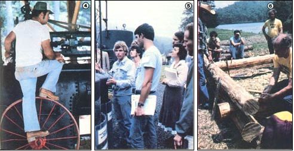

(FROM LEFT) MOTHER staffers were on hand to operate our brand new sawmill, which is powered by this wood-fired steam engine... Classroom discussions of biogas were illustrated by a close-up look at some methane digesters... B. Allan Mackie ? of a Mackie School of Log Building ? demonstrates how to construct an attractive, low-cost home with logs.